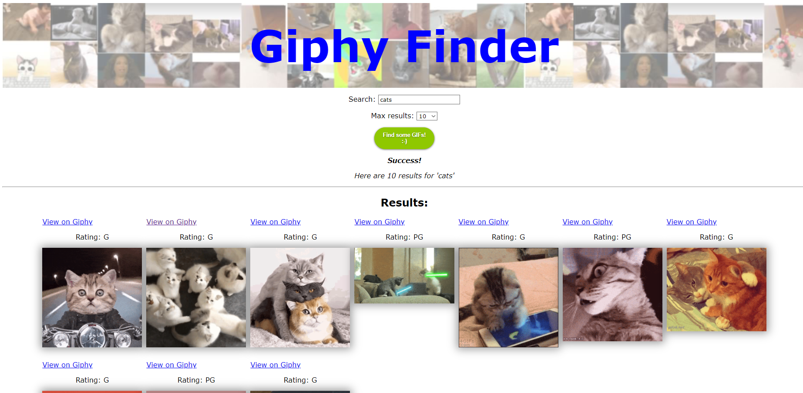

I am looking to improve GIPHY. I am looking to add the ability to instantly put the gif into your pastebin by just clicking on it, and I am also looking to add favoriting images. The purpose for this project is to help people on the internet look for gifs to express themselves. I am looking for feedback on my proposal to see if I am on track for a 100%, as I didn't do as well in the previous project.
It would be nice to see the layout mockup in another layer of detail. But it is relatively simple if you want to make it like this you could but you would lose a few points on visual design unless you make it look really nice UI look and feel etc.
I did some research on how to access the user's copy and paste abilities, and it turns out the classic way to access it was the document.execCommand() method.
Here is the Documentation for itI looked it up and there is a modern day replacement called Clipboard API. I've additionally decided to use the Bootstrap Framework, as many tutorials suggest using it alongside Clipboard API.
This is what I was starting with. Currently, I'm only looking to make changes with CSS to make my giphy searcher be unique to me instead of looking the same as the original assignment.
First, I changed it so that it displayed 5 gifs per row, and have it be centered on the screen.
Then, I made it responsive by reducing the amount of images based on current window width.
I completely remodeled the top header, making the search bar stay at the top of the screen during scrolling. Added a footer that shows the copyright.
I saw that GIPHY has not only GIFs but stickers too, so added a dropdown menu for that. I made the top header search and options look like a full sentance, cause it looks cool
I added more functions to onstart, so that it shows the current top 50 gifs. I also used web storage to save the syntax. clicking Go! will save, onstart will load.
I used this site for webstorage.
I added a button to show more or less gifs, and a page number to show which page you are on.
I used this video for a tutorial on showing how to put the gif link into the pastebin.